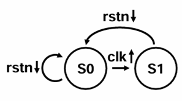
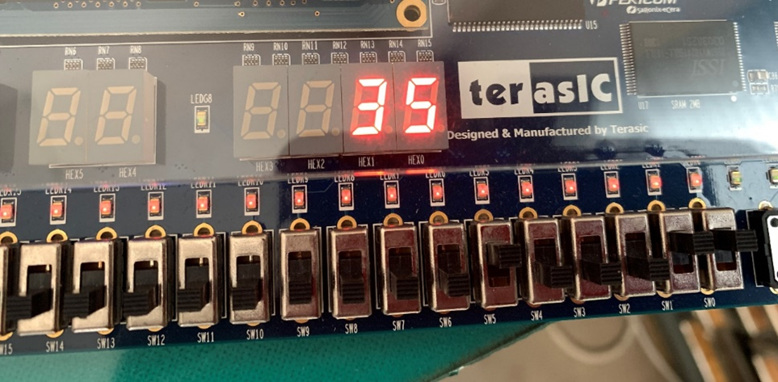

実習4: 2進数を10進数に表示するプログラム (2桁)
例題回路の動作理解
seg7_decimal_1digit の状態遷移図
- S0: 初期化状態
十進数出力の値を0 (4'd0)に初期化します。
2進数入力をレジスタに格納する処理が行われます。 - S1: 十進数出力
レジスタに格納された2進数入力を、7セグメントディスプレイに十進数として出力する状態です。
この遷移図では、クロック信号(clk)とリセット信号(rstn)が使用され、リセットが行われると状態が初期化されるという基本動作が示されています。
Verilog プログラミング練習
次に、十進数の表示を2桁に拡張する方法を説明します。
- bin2dec_1digit をフォルダごとコピー
現在の1桁表示用の bin2dec_1digit をコピーし、2桁に拡張する準備を行います。 - bin2dec_2digits と命名
新しいプロジェクトを bin2dec_2digits として命名します。 - bin2dec_2digits/bin2dec.qpf をダブルクリック
新しいプロジェクトファイルを開きます。 - Project Navigator 内の bin2dec をダブルクリック
Verilog-HDL 記述を拡張するために、プロジェクト内の bin2dec モジュールを編集します。
ステップごとの説明:
1. 最初の準備:
- スイッチで「100011」という2進数を入力すると、この値は「tmp_reg」という変数に格納されます。この段階ではまだ、ディスプレイには何も表示されていません。
2. リセットボタンを押すと:
- リセットボタン(KEY0)が押されると、tmp_regには「35」という数字が設定されます。同時に、10の位と1の位を表示するための変数である digit1 と digit0 は、初期値として「0」が設定されます。
3. 10以上の数値かどうかを確認:
- tmp_reg の値が 10 以上であるかを確認します。もし 10 以上であれば、その値から 10 を引き、その結果を再び tmp_reg に代入します。さらに、この操作を行うたびに、digit1 に 1 を加算します。
具体例として、「35」から10 を引くと「25」になります。このとき、digit1 には「1」が設定されます。次に、「25」から 10 を引いて「15」にし、digit1 にさらに 1 を加えて「2」にします。同様に、「15」から 10 を引いて「5」にし、digit1 にもう1を加えて「3」にします。
4. 1の位の設定:
- 最終的に、tmp_reg に残った値(この例では「5」)を digit0 に設定します。これにより、7セグメントディスプレイの1の位に「5」が表示され、10の位には「3」が表示されることになります。
5. 表示される結果:
- 上記のステップを通して、入力された「100011」という2進数は、10進数の「35」としてディスプレイに表示されます。
上記を図にしたものはこちら。
それでもわからない場合は、こちら（注意：クリックすると解答が開きます）。